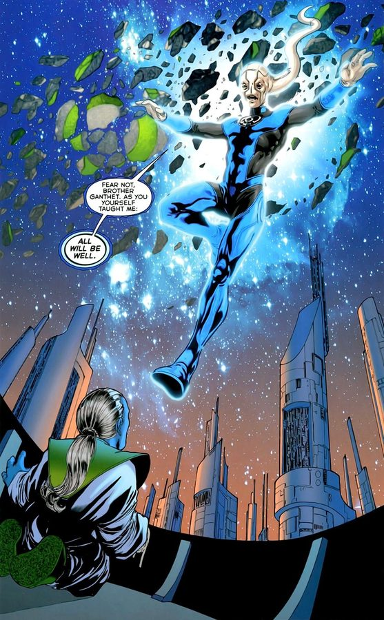
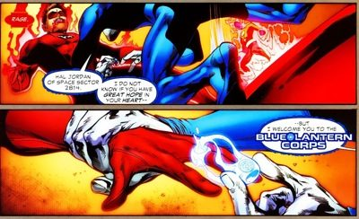
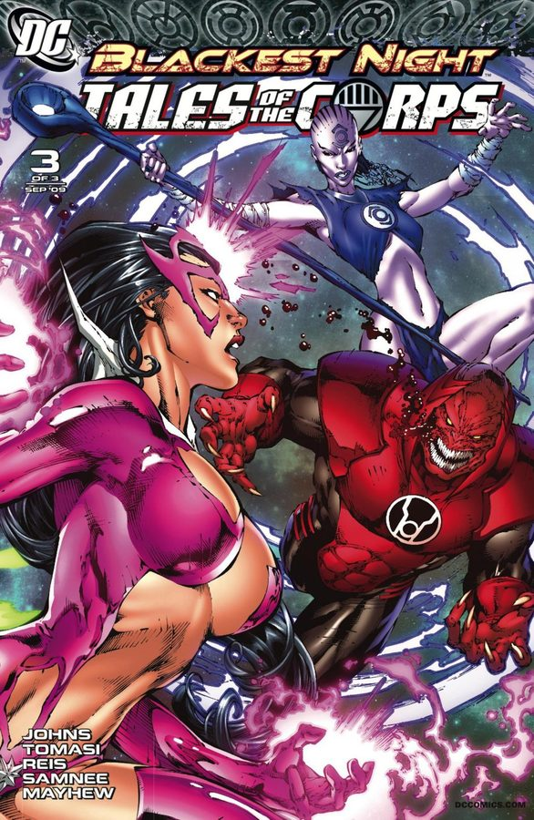

In this universe, feeling is physics. Emotion radiates as light — and light can be wielded.
Emotion, made tangible
Every sentient being generates emotional energy. In most universes that energy just... dissipates. Here, it pools into a spectrum of light spanning the cosmos — seven colors, each one a pure emotion, each one a potential power source.
At the center burns green: willpower, the most stable light. The further a color sits from the center, the wilder and harder to control it becomes. And beyond the seven lie two more: black, the absence of light, and white, all lights combined.
Each light has a living Entity — emotion incarnate, named under each color above. Then there are the two beyond color: Black (Death) and White (Life).
The Entities
These profiles discuss the entity mythology developed from Green Lantern: Rebirth through Blackest Night. The name of a host is not the same as an entity's publication debut. Read the linked profiles for issue references and spoiler boundaries.
Every light has a living soul — emotion incarnate. These are the beings the Corps draw their power from, and the forces behind the spectrum's wars.
The embodiment of rage — a demonic red bull whose horned head mirrors the Red Lantern insignia. It was born from the first murder, and feeds on hatred the way living things feed on food. Whoever it takes as a host is driven into a roaring rampage of revenge, reason burned away. Atrocitus has long sought the Butcher as the true heart of his Corps' fury.
The serpent-like embodiment of avarice, born when the first creature ate more than it needed. It spent most of its existence trapped inside the Orange Lantern Central Power Battery on Okaara, where Larfleeze hoarded it like everything else he owns. Ophidian whispers to the greedy, inflaming their hunger until nothing matters more than what they crave. It is the hungriest of the entities, and the hardest to satisfy.
Parallax is the yellow fear entity, distinct from Hal Jordan's earlier use of the name. Green Lantern: Rebirth connects this possessing force to the Central Power Battery and the green rings' historic weakness against yellow. That later explanation changes how readers understand earlier stories.
Hal's Parallax identity: Green Lantern (1990) #50 (1994). Entity revelation: Green Lantern: Rebirth #3.
Ion is the green willpower entity. Kyle Rayner used the Ion identity before the mythology established a separate being; the Sinestro Corps era clarifies that distinction and explores the relationship between an entity and its host. The profile follows those publications in order.
Separate entity revealed: Green Lantern: Sinestro Corps Special #1 (2007); this is distinct from Kyle's earlier Ion identity.
The embodiment of hope — a great blue bird with the Blue Lantern insignia on its chest, born from the first act of prayer. Gentle where the other entities are ravenous, Adara is drawn to the hopeful and amplifies their light. A Blue Lantern's ring is nearly powerless alone, but in Adara's presence — or near a Green Lantern — hope becomes the spectrum's greatest amplifier. It is the quietest of the entities, and perhaps the kindest.
The embodiment of compassion — an octopus-like indigo creature born when the first being felt another's pain. Like the Indigo Tribe itself, Proselyte is mysterious and rarely seen, drifting through the universe toward those who suffer. It can channel the light of any other Corps, making it one of the most versatile entities. Those it touches are flooded with empathy — whether they want it or not.
The embodiment of love — a violet dragon-like entity tied to the Star Sapphires of Zamaron. It appears in many forms, sometimes as a great winged beast, sometimes wearing a humanoid guise, and it feeds on love in all its forms — including love twisted into obsession. The Predator is the most mercurial of the entities: love can heal or consume, and the entity embodies both. The Star Sapphires draw their power from its light.
The living embodiment of life itself — the first living thing in the universe, born when light burst into the primordial dark. It slumbered for billions of years deep within the Earth, the hidden source from which all life — and every color of the emotional spectrum — ultimately flows. When death itself rose against creation, the Entity awoke and chose champions to wield the white light. It is not an emotion but the wellspring all emotions spring from.
Every Corps at war together — Blackest Night-era artwork.
Blue + Green— hope supercharges willpower

A blue ring near a green one is the spectrum's greatest amplifier. Seen in: Green Lantern #36 (2008) — Saint Walker and Brother Warth reignite a dying sun, hope and will working as one.
Blue vs. Red— hope soothes rage

Blue light can calm a Red Lantern and even undo the red ring's hold. Seen in: Rage of the Red Lanterns (2008) — Saint Walker frees Hal from a red ring's rage.
Blue vs. Yellow— hope drains fear
Hope and fear are natural opposites — blue light drains yellow rings. Seen in: Rage of the Red Lanterns (2008) — Sinestro Corps rings drained by blue light.
Blue vs. Orange— hope starves avarice
Blue light overrides the orange — hope starves avarice. Seen in: Agent Orange (Green Lantern #42, 2009) — a blue ring overrides Larfleeze's orange ring.
Indigo channels all— compassion borrows every light

Compassion can borrow the light of any other Corps. Seen in: Blackest Night: Tales of the Corps #1 (2009) — Indigo-1 channels green, then yellow light through her staff.
Blackest Night: Tales of the Corps #1–3 (2009), joined main covers. Ed Benes (cover pencils); Rob Hunter (cover inks); Nei Ruffino (cover colors). Artwork source & details.
Artwork credits (20 images)
Credits refer to the illustrations shown here. Open a record for sources, adaptations and unresolved details. Some artwork and source pages contain story spoilers.
Red — Red Lanterns (2011) #1, main-cover crop. Ed Benes (cover pencils); Rob Hunter (cover inks); Rod Reis (cover colors).
Orange — Green Lantern (2005) #39 (2009), main-cover artwork with a changed background. Ivan Reis (cover pencils); Oclair Albert (cover inks); Nei Ruffino (cover colors).
Parallax — Green Lantern (2011) #35 (2014), Monster variant cover without trade dress. Ivan Reis (cover artist (publisher credit)); Joe Prado (cover artist (publisher credit)).
Ion — Ion: Guardian of the Universe #1 (2006), cropped main cover. Jeromy Cox (cover artist (publisher credit)); Ivan Reis (cover artist (publisher credit)); Marc Campos (cover artist (publisher credit)).
Lights Interact — Blackest Night: Tales of the Corps #1–3 (2009), joined main covers. Ed Benes (cover pencils); Rob Hunter (cover inks); Nei Ruffino (cover colors).